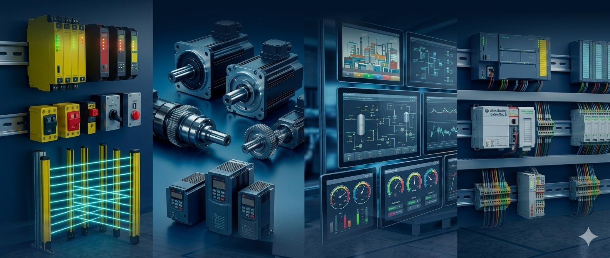
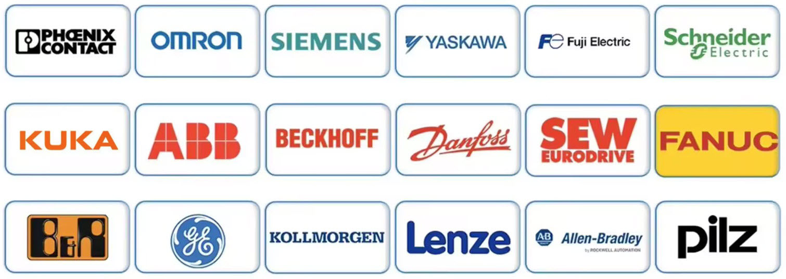

PLC & Control Systems
Control systems that coordinate equipment, sequences, interlocks and automated processes.
- PLC development
- Control logic
- Sequencing
- Interlocks
- Fault handling
- System modifications

TECHNOLOGY
From control systems and industrial networks to visualisation and operational data, we work with the technologies that connect automation together.
OUR TECHNOLOGY
Modern automation systems rely on many technologies working together. PLCs control equipment, networks connect devices, visualisation provides system information and data can reveal how systems are performing.
Our approach is to understand how these technologies work together within the complete system — not simply treat them as separate components.
TECHNOLOGY AREAS
Control systems that coordinate equipment, sequences, interlocks and automated processes.
Clear system information that helps operators understand what is happening and respond effectively.
Reliable communication between controllers, devices, drives and wider automation systems.
Safety-related control functions designed to support safe interaction between people, equipment and automated processes.
Drive and motion control technologies that help equipment operate accurately and consistently.
Using operational data and system information to improve visibility, identify trends and support better decisions.
PLATFORMS & BRANDS
We work across major automation platforms and industrial technologies, supporting existing systems, upgrades and integration across different manufacturers.

And more. We work with the technology already present in your system and help integrate different platforms where required.
THE CONNECTION
A PLC does not operate in isolation. Controllers, networks, drives, safety systems, HMIs and data all contribute to how an automated system behaves.
Understanding these connections helps identify problems more effectively, integrate changes with less disruption and create better visibility across the system.
YOUR SYSTEM
Tell us about your system, technology or engineering challenge.
Discuss your system →